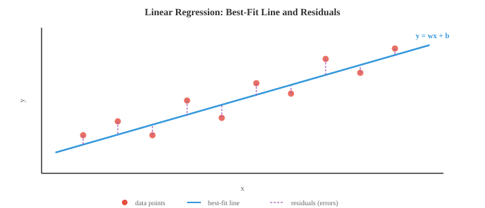
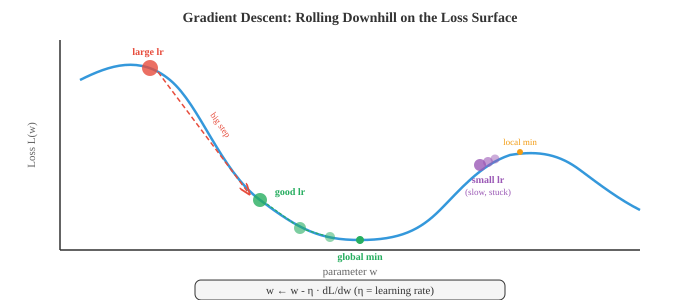

基于梯度的机器学习¶
基于梯度的学习通过迭代跟随损失曲面的斜率来优化模型参数。本文涵盖线性回归、logistic regression、softmax 分类、gradient descent 变体、正则化（L1/L2）以及偏差-方差权衡。
-
第 01 篇中的经典方法使用巧妙的启发式算法或闭合解。本文涵盖通过跟随梯度进行学习的算法——在损失曲面上向下小步前进，直到找到好的参数。基于梯度的学习是从线性回归到最大神经网络一切背后的引擎。
-
线性回归是最简单的基于梯度的模型，它也有闭合解，这使它成为理想的起点。模型是一条直线（或高维中的超平面）：
-
用矩阵表示（来自第二章），如果我们将所有训练输入作为矩阵 \(X\) 的行，并通过在 \(w\) 中附加一列 1 来吸收 bias，则变为 \(\hat{y} = Xw\)。
-
目标是最小化均方误差（MSE），即预测值与实际值之间差的平方的均值：
- 为什么用平方误差？它有概率论依据：如果你假设目标由 \(y = Xw + \epsilon\) 生成，其中 \(\epsilon \sim \mathcal{N}(0, \sigma^2)\)，那么最大化数据的 Gaussian likelihood（第五章）等价于最小化 MSE。平方误差也对大错误的惩罚多于小错误，这通常是可取的。

- 由于 MSE 是 \(w\) 的二次函数，它有一个唯一的全局最小值，可以解析地找到。对其求导，令其等于零，求解得到正规方程：
-
这直接使用了第二章的矩阵逆。表达式 \(X^T X\) 是 \(d \times d\) 矩阵（\(d\) 是特征数），\(X^T y\) 是 \(d\) 维向量。正规方程一次性给出精确的最优权重。
-
正规方程何时会失效？当 \(X^T X\) 是奇异矩阵（不可逆）时，这发生在特征线性相关或样本数少于特征数（\(d > n\)）的情况下。此时需要正则化（后面介绍）或 gradient descent。
-
Logistic regression 将线性模型调整用于二分类。我们不是预测连续值，而是想得到 0 到 1 之间的概率。sigmoid 函数将任意实数压缩到这个范围：
- 模型计算 \(z = w \cdot x + b\)（线性得分，与线性回归相同），然后通过 sigmoid：\(\hat{y} = \sigma(w \cdot x + b)\)。输出 \(\hat{y}\) 被解释为 \(P(y = 1 \mid x)\)。

-
sigmoid 有良好的性质：\(\sigma(0) = 0.5\)，当 \(z \to \infty\) 时 \(\sigma(z) \to 1\)，当 \(z \to -\infty\) 时 \(\sigma(z) \to 0\)，且其导数具有优雅的形式 \(\sigma'(z) = \sigma(z)(1 - \sigma(z))\)。
-
Logistic regression 的损失函数是二元 cross-entropy（BCE），直接来自 Bernoulli likelihood（第五章）：
-
当真实标签为 1 时，只有第一项起作用，惩罚低预测。当真实标签为 0 时，只有第二项起作用，惩罚高预测。对数使惩罚在自信错误预测时极为陡峭：当真实标签为 1 时预测 0.01 的代价远大于预测 0.4。
-
与线性回归的 MSE 不同，最小化 BCE 的权重没有闭合解，需要迭代方法：gradient descent。
-
Gradient descent 的直觉很简单：想象你站在雾中的山丘（损失曲面）上。你看不到全局最小值，但你能感受到脚下的坡度。你向下坡走一步，再次感受坡度，重复。最终你到达谷底。
- Learning rate \(\eta\) 控制步长。太大会冲过山谷，无法收敛；太小会缓慢地移动，可能陷入局部最小值。

-
梯度 \(\frac{\partial \mathcal{L}}{\partial w}\) 是指向最陡上升方向的向量。我们减去它是因为我们想下坡。这是第三章的链式法则应用于损失函数。
-
Batch gradient descent 在每一步使用整个训练集计算梯度。这给出精确梯度，但当 \(n\) 很大时代价高昂。
-
随机梯度下降（SGD） 每步使用一个随机样本。梯度有噪声（用一个样本估计真实梯度），但每步非常快。噪声实际上有助于逃出浅层局部最小值。
-
Mini-batch gradient descent 折中处理：每步使用 \(B\) 个样本（通常为 32、64 或 256）。这在计算效率（对 batch 的向量化操作）和梯度质量之间取得平衡。几乎所有深度学习都使用 mini-batch SGD。
-
Backpropagation 是我们实际在具有多个参数的模型（如神经网络）中计算梯度的方法。它是第三章的链式法则系统地应用于计算图。
-
任何模型都可以表示为有向无环操作图：输入流入，被权重相乘，求和，通过非线性函数，最终产生损失值。前向传递通过将数据从输入到输出流过这个图来计算输出（和损失）。
-
后向传递（backpropagation）反向传播梯度。从损失开始，使用每个节点处的链式法则计算损失相对于每个中间值的变化。如果 \(L\) 依赖于 \(z\)，\(z\) 依赖于 \(w\)，则：
-
每个节点只需知道它自己的局部导数和从上方流入的梯度。这使 backpropagation 模块化且高效：代价大约是前向传递的两倍（一次前向，一次后向）。
-
原始 SGD 有一个问题：它在曲率陡峭的方向上振荡，在平坦方向上进展缓慢。优化器通过根据梯度历史调整步长来改进这一点。
-
带 momentum 的 SGD 保持过去梯度的运行平均值（指数移动平均，来自第四章）。这平滑了振荡，沿着一致的方向加速前进：
-
想象一个向下滚动的球：momentum 让它在一致的方向上积累速度，并抑制左右晃动。典型值为 \(\beta = 0.9\)。
-
Nesterov 加速梯度（NAG） 是一个小而巧妙的调整：不是在当前位置计算梯度，而是在"前瞻"位置 \(w - \eta \beta v_{t-1}\) 计算。这个纠正步骤减少了过冲：
- Adagrad 对每个参数分别调整 learning rate。接收大梯度的参数获得更小的 learning rate，反之亦然。它累积梯度的平方：
-
问题：\(G_t\) 只会增长，所以有效 learning rate 单调减小，最终变得太小而无法学到任何东西。
-
RMSprop 通过使用梯度平方的指数移动平均而非求和来解决这个问题，使近期梯度比久远梯度更重要：
- Adam（自适应矩估计）结合了 momentum 和 RMSprop。它维护一阶矩估计（梯度均值，类似 momentum）和二阶矩估计（梯度平方均值，类似 RMSprop）：
- 由于 \(m_t\) 和 \(v_t\) 初始化为零，在早期步骤中偏向零。偏差修正解决了这个问题：

-
默认超参数（\(\beta_1 = 0.9\)，\(\beta_2 = 0.999\)，\(\epsilon = 10^{-8}\)）在众多问题上效果良好，这就是 Adam 成为大多数深度学习工作默认优化器的原因。
-
AdamW 将权重衰减与梯度更新解耦。标准 L2 正则化和权重衰减对 SGD 等价，但对 Adam 不等价。AdamW 直接对参数应用权重衰减，而不是将 \(\lambda w\) 添加到梯度。这带来更好的泛化，现在是 transformer 训练的标准：
- LION（EvoLved Sign Momentum）是通过程序搜索发现的新优化器。它只使用 momentum 更新的符号（而非大小），使每次更新在尺度上均匀。LION 比 Adam 使用更少内存（无二阶矩缓冲区），在许多任务上可以匹敌或超越 Adam：
- Muon（Momentum + 正交化）应用 Nesterov momentum，然后使用 Newton-Schulz 迭代对更新矩阵进行正交化，该迭代近似极分解。结果更新方向位于 Stiefel 流形上，每次更新在所有奇异方向上具有大致相等的幅度，防止任何单个方向主导。这消除了对自适应二阶矩估计（无像 Adam 的 \(v_t\) 缓冲区）的需求，减少内存。Muon 在 transformer 训练上显示出强劲效果，通常以更快的收敛匹配 AdamW 质量，特别是对于 attention 和 MLP 权重矩阵。Embedding 和输出层通常仍由 AdamW 处理。
- Newton-Schulz 迭代通过重复 \(X_{k+1} = \frac{1}{2} X_k (3I - X_k^T X_k)\) 几步（通常 5-10 步）来计算正交因子。这避免了完整 SVD 的代价，同时给出良好的近似。


-
除 MSE 和 BCE 外，还有几种常用的损失函数。
-
平均绝对误差（MAE），即 L1 损失，取绝对差的平均：\(\frac{1}{n}\sum|y_i - \hat{y}_i|\)。它对异常值比 MSE 更鲁棒，因为它不对大误差取平方。
-
Huber 损失结合了两者的优点：对小误差表现像 MSE（平滑，易于优化），对大误差表现像 MAE（对异常值鲁棒）。它有一个阈值 \(\delta\) 控制过渡。
-
分类 cross-entropy（CCE） 将 BCE 推广到多个类别。如果 \(\hat{y}_k\) 是类别 \(k\) 的预测概率，真实类别为 \(c\)：
-
这就是正确类别的负对数概率。最小化 cross-entropy 等价于最大化 likelihood，这与第五章的信息论联系起来：cross-entropy 衡量当你使用预测分布代替真实分布时需要额外多少比特。
-
Hinge 损失由 SVM 使用：\(\mathcal{L} = \max(0, 1 - y \cdot f(x))\)。它只惩罚在错误一侧或间隔内的预测。一旦一个点被正确分类且置信度足够高，损失为零。
-
正则化通过对复杂模型添加惩罚来防止过拟合。正则化损失为：
-
L2 正则化（Ridge，权重衰减）惩罚权重平方和：\(R(w) = \|w\|^2 = \sum w_i^2\)。它阻止任何单个权重变得太大，有效地将所有权重向零收缩，但很少使其完全为零。
-
L1 正则化（Lasso）惩罚权重绝对值之和：\(R(w) = \|w\|_1 = \sum |w_i|\)。它鼓励稀疏性，将许多权重精确地驱动为零，从而执行自动特征选择。
-
Elastic Net 结合了两者：\(R(w) = \alpha \|w\|_1 + (1 - \alpha) \|w\|^2\)，混合了稀疏性和收缩。
-
有一个优美的贝叶斯解释（来自第五章）。L2 正则化等价于对权重放置 Gaussian prior 并找到 MAP 估计。L1 正则化对应 Laplace prior。正则化强度 \(\lambda\) 控制你相对于数据对 prior 的信任程度。
-
评估指标告诉你模型是否真正有效。对于回归，MSE 和 MAE 是标准。对于分类，情况更为复杂。
-
混淆矩阵是二分类的四个计数表格：
- 真正例（TP）：预测为正，实际为正
- 假正例（FP）：预测为正，实际为负
- 真负例（TN）：预测为负，实际为负
-
假负例（FN）：预测为负，实际为正
-
准确率 = \(\frac{TP + TN}{TP + TN + FP + FN}\) 在类别不平衡时会产生误导。如果 99% 的邮件不是垃圾邮件，总是预测"非垃圾邮件"的模型准确率为 99%，但毫无用处。
-
精确率（Precision） = \(\frac{TP}{TP + FP}\) 回答：在所有预测为正的样本中，有多少实际为正？高精确率意味着少量误报。
-
召回率（Recall）（灵敏度） = \(\frac{TP}{TP + FN}\) 回答：在所有实际为正的样本中，你捕获了多少？高召回率意味着少量漏报。
-
F1 分数 = \(\frac{2 \cdot \text{精确率} \cdot \text{召回率}}{\text{精确率} + \text{召回率}}\) 是精确率和召回率的调和均值，平衡了两者。
-
ROC 曲线在将分类阈值从 0 变化到 1 时，绘制真正例率（召回率）对假正例率（\(\frac{FP}{FP + TN}\)）的关系。完美分类器贴近左上角。AUC（ROC 曲线下面积）用单个数字汇总性能：1.0 是完美，0.5 是随机猜测。
-
交叉验证提供泛化性能的更可靠估计。在 \(k\) 折交叉验证中，将数据分成 \(k\) 折，在 \(k-1\) 折上训练，在剩余的一折上测试，然后轮换。所有 \(k\) 折的平均测试性能是你的估计。这对训练和测试都使用所有数据（只是从不同时进行），在数据稀缺时特别有价值。
-
偏差-方差权衡（来自第四章）是 ML 的基本张力。模型的期望误差分解为：
-
偏差是由错误假设导致的系统误差（例如，用直线拟合曲线数据）。方差是对训练数据波动的敏感性（例如，20 次多项式拟合噪声）。简单模型具有高偏差和低方差；复杂模型具有低偏差和高方差。最优点使总误差最小。
-
Learning rate 调度在训练过程中调整 \(\eta\)。常见策略：
- 步进衰减：每 \(N\) 个 epoch 将 \(\eta\) 乘以一个因子（例如 0.1）
- 余弦退火：按余弦曲线将 \(\eta\) 从初始值平滑减小到接近零
- 预热（Warmup）：以很小的 \(\eta\) 开始，在前几千步线性增加，然后衰减。这防止初始大梯度使训练不稳定
-
1cycle：一次余弦先升后降的循环，可以加快收敛
-
超参数调整是找到 learning rate、batch size、正则化强度等由 gradient descent 无法学习的设置的良好值的过程。常见方法：
- 网格搜索：尝试预定义网格上的每种组合（穷举但昂贵）
- 随机搜索：随机采样组合，通常更高效，因为并非所有超参数都同等重要
- 贝叶斯优化：建立目标函数的模型，并智能选择下一个要尝试的超参数
-
ASHA（异步连续减半算法）：以小 budget 并行运行多个试验，然后将最有前途的提升到更大 budget，同时提前终止其余。它将早停的效率与大规模并行性结合——不是运行 100 次完整训练，而是以低成本启动所有 100 次，在每个阶段保留前四分之一，只有少数运行到完成。这是 Ray Tune 等现代大规模调整框架的核心。
-
无调度学习（Schedule-free learning）完全消除了对 learning rate 调度的需求。它不是按固定曲线衰减 \(\eta\)，而是维护两个序列：迭代的慢速移动平均 \(z_t\)（收敛到最优值）和快速探索迭代 \(y_t\)（评估梯度的位置）。最终输出是平均序列，这在理论上可以匹配事后最佳调度的收敛速率。这完全消除了调度作为超参数——你只需设置基础 learning rate，优化器处理其余部分。无调度版本的 SGD 和 Adam 都已显示出能匹配或超越其调度版本。
编程任务（使用 CoLab 或 notebook）¶
-
用正规方程和 gradient descent 两种方法实现线性回归。比较解，并绘制 GD 损失随迭代的收敛过程。
import jax import jax.numpy as jnp import matplotlib.pyplot as plt # 生成合成数据：y = 3x + 2 + 噪声 key = jax.random.PRNGKey(42) n = 100 X = jax.random.uniform(key, (n, 1), minval=0, maxval=10) y = 3 * X[:, 0] + 2 + jax.random.normal(key, (n,)) * 1.5 # 添加 bias 列 X_b = jnp.column_stack([X, jnp.ones(n)]) # 正规方程 w_exact = jnp.linalg.solve(X_b.T @ X_b, X_b.T @ y) print(f"正规方程：w={w_exact[0]:.4f}, b={w_exact[1]:.4f}") # Gradient descent w_gd = jnp.zeros(2) lr = 0.005 losses = [] for step in range(500): pred = X_b @ w_gd error = pred - y loss = jnp.mean(error ** 2) losses.append(float(loss)) grad = (2 / n) * X_b.T @ error w_gd = w_gd - lr * grad print(f"Gradient descent：w={w_gd[0]:.4f}, b={w_gd[1]:.4f}") fig, axes = plt.subplots(1, 2, figsize=(12, 4)) axes[0].scatter(X[:, 0], y, s=15, alpha=0.5, color='#3498db') axes[0].plot([0, 10], [w_exact[1], w_exact[0]*10 + w_exact[1]], color='#e74c3c', linewidth=2) axes[0].set_title("线性回归拟合") axes[0].set_xlabel("x"); axes[0].set_ylabel("y") axes[1].plot(losses, color='#27ae60', linewidth=1.5) axes[1].set_title("GD 损失收敛") axes[1].set_xlabel("步数"); axes[1].set_ylabel("MSE") axes[1].set_yscale('log') plt.tight_layout() plt.show() -
使用 gradient descent 从头实现 logistic regression。在二维数据集上训练，并可视化学习到的决策边界。
import jax import jax.numpy as jnp import matplotlib.pyplot as plt from sklearn.datasets import make_moons # 生成数据 X, y = make_moons(n_samples=300, noise=0.2, random_state=42) X, y = jnp.array(X), jnp.array(y, dtype=jnp.float32) def sigmoid(z): return 1 / (1 + jnp.exp(-z)) # 添加 bias 列 X_b = jnp.column_stack([X, jnp.ones(len(X))]) w = jnp.zeros(3) lr = 0.5 losses = [] for step in range(2000): z = X_b @ w pred = sigmoid(z) # BCE 损失 loss = -jnp.mean(y * jnp.log(pred + 1e-8) + (1 - y) * jnp.log(1 - pred + 1e-8)) losses.append(float(loss)) # 梯度 grad = X_b.T @ (pred - y) / len(y) w = w - lr * grad # 决策边界 xx, yy = jnp.meshgrid(jnp.linspace(-2, 3, 200), jnp.linspace(-1.5, 2, 200)) grid = jnp.column_stack([xx.ravel(), yy.ravel(), jnp.ones(xx.size)]) zz = sigmoid(grid @ w).reshape(xx.shape) plt.figure(figsize=(8, 6)) plt.contourf(xx, yy, zz, levels=[0, 0.5, 1], alpha=0.3, colors=['#e74c3c', '#3498db']) plt.contour(xx, yy, zz, levels=[0.5], colors='#9b59b6', linewidths=2) plt.scatter(X[y==0, 0], X[y==0, 1], c='#e74c3c', s=15, label='类别 0') plt.scatter(X[y==1, 0], X[y==1, 1], c='#3498db', s=15, label='类别 1') plt.title("Logistic Regression 决策边界") plt.legend() plt.grid(alpha=0.3) plt.show() -
在二维二次曲面上比较优化器轨迹。从同一起点运行 SGD、SGD+Momentum 和 Adam，并绘制它们的路径。
import jax import jax.numpy as jnp import matplotlib.pyplot as plt # 细长二次曲面：L(w1, w2) = 0.5*w1^2 + 10*w2^2 def loss_fn(w): return 0.5 * w[0]**2 + 10 * w[1]**2 grad_fn = jax.grad(loss_fn) def run_sgd(w0, lr=0.05, steps=80): w = w0.copy() path = [w.copy()] for _ in range(steps): g = grad_fn(w) w = w - lr * g path.append(w.copy()) return jnp.stack(path) def run_momentum(w0, lr=0.05, beta=0.9, steps=80): w, v = w0.copy(), jnp.zeros(2) path = [w.copy()] for _ in range(steps): g = grad_fn(w) v = beta * v + (1 - beta) * g w = w - lr * v path.append(w.copy()) return jnp.stack(path) def run_adam(w0, lr=0.05, b1=0.9, b2=0.999, eps=1e-8, steps=80): w, m, v = w0.copy(), jnp.zeros(2), jnp.zeros(2) path = [w.copy()] for t in range(1, steps + 1): g = grad_fn(w) m = b1 * m + (1 - b1) * g v = b2 * v + (1 - b2) * g**2 m_hat = m / (1 - b1**t) v_hat = v / (1 - b2**t) w = w - lr * m_hat / (jnp.sqrt(v_hat) + eps) path.append(w.copy()) return jnp.stack(path) w0 = jnp.array([8.0, 3.0]) sgd_path = run_sgd(w0) mom_path = run_momentum(w0) adam_path = run_adam(w0) # 绘图 fig, ax = plt.subplots(figsize=(8, 6)) w1 = jnp.linspace(-10, 10, 100) w2 = jnp.linspace(-4, 4, 100) W1, W2 = jnp.meshgrid(w1, w2) L = 0.5 * W1**2 + 10 * W2**2 ax.contour(W1, W2, L, levels=20, cmap='Greys', alpha=0.4) ax.plot(sgd_path[:,0], sgd_path[:,1], 'o-', color='#3498db', markersize=2, linewidth=1, label='SGD') ax.plot(mom_path[:,0], mom_path[:,1], 'o-', color='#27ae60', markersize=2, linewidth=1, label='Momentum') ax.plot(adam_path[:,0], adam_path[:,1], 'o-', color='#e74c3c', markersize=2, linewidth=1, label='Adam') ax.plot(0, 0, 'k*', markersize=15, label='最小值') ax.set_xlabel('w₁'); ax.set_ylabel('w₂') ax.set_title("细长二次曲面上的优化器轨迹") ax.legend() plt.grid(alpha=0.3) plt.show() -
展示 L1 与 L2 正则化对权重稀疏性的影响。使用两种惩罚分别训练线性回归，并比较所得权重向量。
import jax import jax.numpy as jnp import matplotlib.pyplot as plt # 合成数据：20 个特征中只有前 3 个相关 key = jax.random.PRNGKey(0) n, d = 200, 20 w_true = jnp.zeros(d).at[:3].set(jnp.array([3.0, -2.0, 1.5])) X = jax.random.normal(key, (n, d)) y = X @ w_true + 0.5 * jax.random.normal(key, (n,)) def train_ridge(X, y, lam=1.0, lr=0.01, steps=2000): """L2 正则化线性回归，使用 GD。""" w = jnp.zeros(X.shape[1]) for _ in range(steps): pred = X @ w grad = (2/len(y)) * X.T @ (pred - y) + 2 * lam * w w = w - lr * grad return w def train_lasso(X, y, lam=1.0, lr=0.01, steps=2000): """L1 正则化线性回归，使用近端 GD。""" w = jnp.zeros(X.shape[1]) for _ in range(steps): pred = X @ w grad = (2/len(y)) * X.T @ (pred - y) w = w - lr * grad # 软阈值（L1 的近端算子） w = jnp.sign(w) * jnp.maximum(jnp.abs(w) - lr * lam, 0) return w w_l2 = train_ridge(X, y, lam=0.1) w_l1 = train_lasso(X, y, lam=0.1) fig, axes = plt.subplots(1, 3, figsize=(14, 4)) axes[0].bar(range(d), w_true, color='#333', alpha=0.7) axes[0].set_title("真实权重"); axes[0].set_xlabel("特征") axes[1].bar(range(d), w_l2, color='#3498db', alpha=0.7) axes[1].set_title("L2（Ridge）：收缩所有权重"); axes[1].set_xlabel("特征") axes[2].bar(range(d), w_l1, color='#e74c3c', alpha=0.7) axes[2].set_title("L1（Lasso）：无关权重归零"); axes[2].set_xlabel("特征") plt.tight_layout() plt.show() print(f"L2 非零权重数：{int(jnp.sum(jnp.abs(w_l2) > 0.01))}/{d}") print(f"L1 非零权重数：{int(jnp.sum(jnp.abs(w_l1) > 0.01))}/{d}")